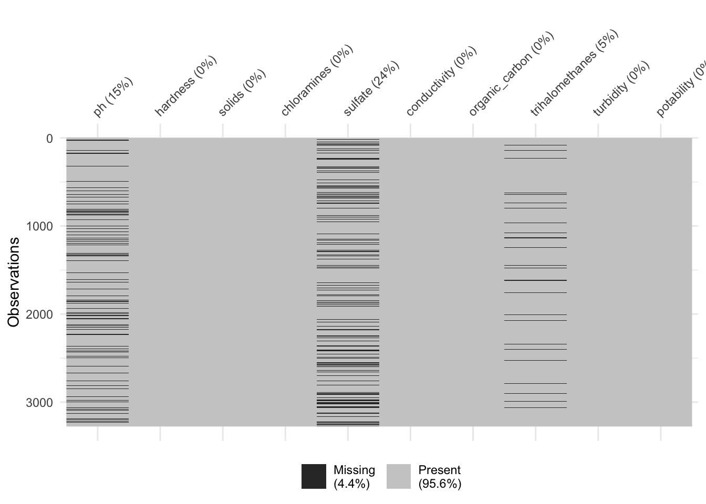
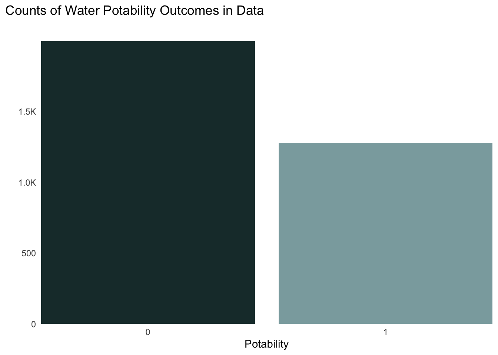
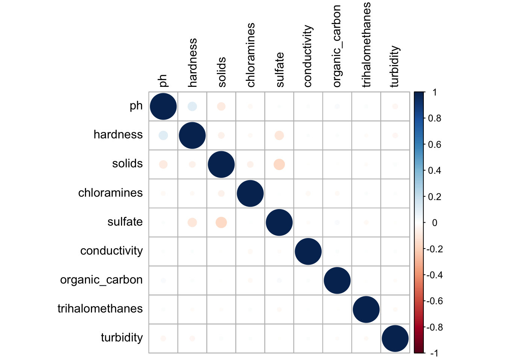
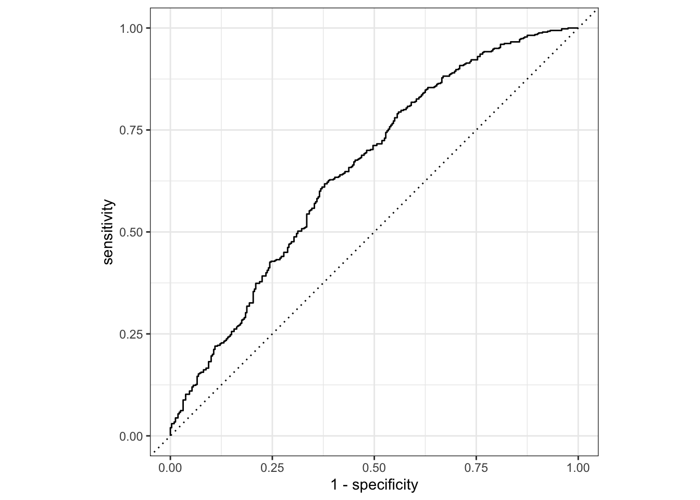
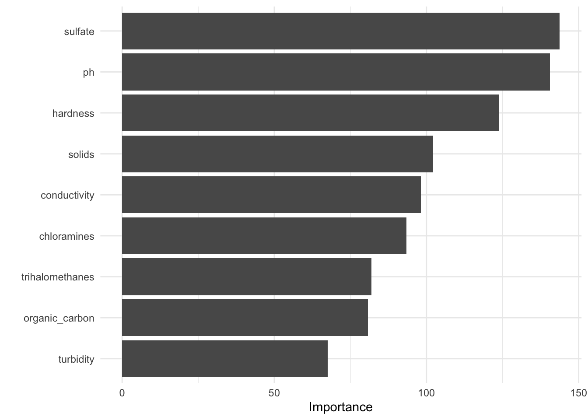

Water quality is a major threat to health concern that affects billions of people around the globe. There a number of factors in water that can determine whether it is safe to dink or not including both abiotic (non-living) and biotic (living) factors. By understanding the drivers of what makes water potable or safe to drink, we can predict whether whether or not the water is safe by just looking at a select number of attributes of the water. So our question beign asked here is:
“Can we predict the potability of water based off of it’s chemical characteristics alone?”
The goal of this analysis is to identify the classification model that predicts water potability the best based off of chemical attributes from water samples. In this analysis, I train various supervised machine learning classification algorithms on a sample of over 3,000 water quality observations. This data is publicly available on Kaggle. The specific predictor variables included in the models are:
ph (the acidity of the water)
hardness (the concentration of minerals)
solids (concentration of solid material)
chloramines (concentration of chlorine and ammonia compounds)
sulfate (oxidized sulfur concentration)
conductivity (ability of the water to pass an electrical current)
organic_carbon (concentration of organic forms of carbon)
trihalomethanes (byproducts of treating water with organic compounds )
turbidity (cloudiness of water)
Non-potable and potable water
Wrangling the Data
First, we are going to read in all of the necessary packages that are required for this analysis.
code
# loading packageslibrary(tidyverse) # keeping data clean, tidy, and organizedlibrary(janitor) # for clean_names()library(patchwork) # stitching together figureslibrary(corrplot) # correlation plotlibrary(tidymodels) # making modelslibrary(lattice)library(kknn)library(ranger)library(recipes)library(yardstick)library(themis) # for upsamplinglibrary(vip) # for vip chart # making a color pallet for binary outcomespal <-c("0"="#1C3738", "1"="#8BAAAD")
Fortunately, our data is already relatively clean and in tidy format as is. The only things we need to do are to clean up the column names using the clean_names() function in the janitor package and also make our outcome variable potability a factor. Cleaning the names allows us to reformat all of the columsn so they have no spaces or upperase letters. This helps keeps things simple and tidy. Changing the potability column to a factor is important because it is initially read in as a numeric value (0 or 1), but we want it to represent a group (non-potable or potable) so we can use it as a binary group outcome in our models.
Cleaning Data
code
# reading in the datawater <-read.csv("water_potability.csv") %>%# cleaning up the column namesclean_names() %>%# making potability as a factor mutate(potability =factor(potability))
Missing Values
We want to also check to see if our data has any missing values first. Missing values can be problematic especially in large quantities. We can do so using the naniar package to plot the missing data across columns using the viz_miss() function.
code
# looking for missing data naniar::vis_miss(water)

Figure 1. Visualizing missing values throughout the data.
We can see that there are a fair amount of values missing from the ph, sulfate, and trihalomethanes columns. One way to tackle this is to get rid of that data all together, but we would be losing a lot of valuable data from other predictors in doing so. We can address this in our modeling by imputing the data, or filling it with estimated values from different methods. We will come back to this later.
Exploratory Data Analysis
The first step you want to take in making models is exploratory data analysis (EDA). This is the phase where you dive into your data, look at its nooks and crannies, and try to identify potential patterns that could give insight into the steps you will want to take when modeling. Looking at the abundance. distribution, and correlation of the data are all importance steps to take.
Bar Chart
The first thing we want to do is check to compare the total counts of our potability outcomes (0 = not potable and 1 = potable). We can do so by simply plotting a barchart:
code
ggplot(data = water, aes(x = potability, fill = potability)) +geom_bar() +scale_fill_manual(values =c("0"="#1C3738", "1"="#8BAAAD"),guide ="none") +theme_minimal() +labs(y ="", x ="Potability", title ="Counts of Water Potability Outcomes in Data") +scale_x_discrete(expand =c(0, 0)) +scale_y_continuous(expand =c(0, 0),# modifying y axis scale labels = scales::label_number(scale_cut = scales::cut_short_scale())) +theme(panel.grid.minor.y =element_blank(),panel.grid.major.y =element_blank(),panel.grid.major.x =element_blank(),plot.title.position ="plot",plot.title =element_text(margin =margin(t =0, r =0, b =2, l =0, unit ="lines")), )

Figure 2. A Bar chart showing the total number of observations by potability outcomes (0 = not potable, 1 = potable) in the data set.
We notice that there are significantly more observations with a value of 0 compared to 1. This tells us that we have a class imbalance in the data and may need to do some upsampling (which we will discuss later). Overall, this is not a major challenge, but it tells us that the models may do a better job at predicting non-potable water compared to potable water as there is less data for the latter.
Histograms
One great way to investigate our data in the exploratory data analysis is plotting the distribution of our predictors on histograms. Histograms show the distribution and frequency of observations in a data set. The allow us to check and see if it is normally distributed, roughly where the center fo the data is, how wide the spread is, and if there are outliers skewing the data.
Figure 3. Histograms showing total solids, pH, hardness, and organic carbon by potability in water samples.
The histograms show that solids, ph, hardness, and organic_carbon all appear to be normally distributed. solids has a slight right skew, indicating that there may be some more high solid concentrations than lower in our sample as a result of some outliers. Overall, these distributions appear to be similarly distributed regardless of potability. This indicates that
Boxplots
Another way we can check the distribution of our data is by making boxplots. They provide a bit more insight into the spread of the data by providing the median, quartile ranges, and outliers of the data. It provides some more summary statistics that we can use to directly compare our data.
Figure 4. Boxplots showing the distribution of cholarmine, sulfate, conductivity, and trihalomethane in water samples.
As you can see, the chloramines, sulfate, conductivity, and trihalomethanes variables all appear to have similar distributions regardless of the water is potable. However, this does not entirely mean that they will not be important predicotr variables in our models. We can see that quartile ranges of potable and non-potable data line up evenly for each variable with a bit wider of a spread for chloramines and sulfate that are classified as potable.
Correlation Plot
We then need to check for correlation/collinearity between predictor variables as this could cause issues with our models. Collinearity arises when two or more predictor variables are highly correlated with one another. This can lead to difficulty in interpreting individual coefficients and inflated magnitudes as well as decrease predictability accuracy. Therefore, we want to make sure our data does not have any highly correlated predictors.
code
water %>%select_if(is.numeric) %>%cor(use ="complete.obs") %>%# corrplot(type = "lower", method = "shade", order = "AOE", diag = TRUE)corrplot( addrect =2, tl.col="black")

Figure.5. Correlation plot showing the correlation of all continuous water potability predictor variables. There is little to know correlation between variables.
Our correlation plot shows that there is minimal to little correlation between predictor variables in this data set. Sulfates have a slight negative relationship with hardness and solids and ph has a slight positive relationship with hardness and negative relationship with solids. These are overall very small and not strong enough to consider collinearity an issue.
Splitting
Our next step is to start preparing the data to fit our models. The first thing we have to do is split our data into both training and testing data. The training data is going to be used to actually train and fit our models. It is the data that the models learn from to create their parameters or coefficients that can be used to then make predictions about new data. The way that we test the performance of these models is by predicting the outcome of the testing data observations and comparing it to the actual outcome. In other words, we use the testing data as new or unseen data that we can use our models to make predictions on and gauge its performance using different metrics.
I use a 75%-25% random split to create the training and testing data sets. We want the majority of our data to be training data (75%) to ensure that the model has substantial observations to work with. However, we need to ensure that we retain enough data as unseen/new data (25%) to actually test our models with. There is another issue that we have to consider when splitting our data however. That issue is that we want our outcome variable to be equally represented across both training and testing data sets, yet a random split could cause an imbalance of the non-potable (0) and potable (1) outcomes being represented in the two different data sets. In other words, the majority of the the 0’s could end up in one data set and the 1’s in another due to random chance. This would then cause issues as our models might be trained to predict one outcome much better than another outcome leading to poor model performance. We can account for this by stratifying out data in the split by the outcome variable potability.
code
set.seed(4298)# splitting ----# splitting using a 75-25 ratio of training to testing data water_split <- rsample::initial_split(water, prop =0.75,# stratifying on the outcome (potability)strata = potability)# assining the split data to their respective data frame'swater_train <- rsample::training(water_split)water_test <- rsample::testing(water_split)
Cross validation
One other problem with our current set up is that training data error is not a good estimate of testing data error. When we fit a model on the training data, the model likely will have a much lower error rate or higher performance on the training data than it will when we make predictions on the testing data. This is because the model is prone to overfit the training data itself, and it is therefore a poor indication of how how the model will perform on unseen/testing data. And once we make predicitons using the testing data, we can no longer go back and adjust our model as this become unethical. This leads us to a position where we need to gauge what the testing error might be before making prdictions on the testing data set.
Fortunately, we have k-folds cross validation for this. K-fold cross-validation is a fundamental technique in machine learning used to evaluate the performance of predictive models accurately. It works by dividing the training dataset into k equal-sized folds. Each fold is used as a mini training set, except for one, which serves as a validation set. This process is repeated k times, with each fold taking turns as the validation set. By iterating through all k folds, we obtain k estimates of the model’s performance. This technique helps prevent overfitting, makes efficient use of the available data, and facilitates hyperparameter tuning, ultimately leading to more reliable model evaluation and selection.
code
# making folds ----#cross validation with 5 foldswater_folds <-vfold_cv(water_train, v =5)water_folds
Before we fit our models, we need to make a recipe or instructions on what ingredients to include in our models. We can do so by specifying what predictor variables to include. Lets add in all of our predictors variables to see how far it can take us. Feature selection will be taken care of by some models like Elastic Nets, so we will just include them all here. We also have missing data in the ph, trihalomethanes, and sulfate variables. We can address this by imputing or replacing those NA values with an estimated value from a linear regression between the variable we want to impute and another variable of interest. Because there is a correlation between ph and hardness as well as sulfate and solids, we will use these variables in a linear regression to impute the missing data. However, there does not appear to be a linear relationship between trihalomethanes and any other variable, so we are using a k nearest neighbors or knn approach to impute these (we will discuss knn in detail later).
Furthermore, we discussed upsampling our potability outcomes as we have significantly more observations classified as 0 than we do 1. Upsampling essentially randomly selects observations from the less frequent class to repeat in our data so that we end up with an equal number of outcome observations. It is important to include this here so that our models can train equally on both outcomes. The last thing we need to do is center and scale our variables so that they can be more easily comparable and interpretation. This reduces the effect of large outliers and variables with high variance which can skew the model because of their large magnitude. It is a way of correcting for variables with high variation in their data and make our results more accurate and interperetable.
code
# setting up a recipe recipe <- recipes::recipe(potability ~ ph + hardness + solids + chloramines + sulfate + conductivity + organic_carbon + trihalomethanes + turbidity , data = water_train) %>%# imputing missing datastep_impute_linear(ph, impute_with =imp_vars(hardness)) %>%step_impute_knn(trihalomethanes, impute_with =imp_vars(all_predictors())) %>%step_impute_linear(sulfate, impute_with =imp_vars(solids)) %>%# upsample data to make sure 0 and 1 are represented equallystep_upsample(potability, over_ratio =0.5) %>%#center ans scalingstep_normalize(all_predictors())# checking that the recipe works prep(recipe) %>%bake(water_train)
I chose four different models to fit for binary classification:
1) Logistic Regression
Logistic regression takes a binary classification approach (0,1) to model the probability of the outcome of the dependent variable given the values of included predictor variables. I assumes a linear relationship between the independent variables and the log odds of the dependent variable. It estimates the probability that the outcome will occur, and then we determine which group that will fall under (0,1) depending on what we set the threshold to be which we set to be 50% in this case. We can interpret the coefficient of the variables to be the effect of the variable on the log odds of the dependent variable. Because there are no hyperparameters, or other model settings that are not learned from the data, we have nothing to tune, or iterate through multiple combinations of.
We are also going to fit the data to an elastic net model which combines regularization techniques (L1 = Lasso and L2 = Ridge). The L1 regularization introduces sparsity by penalizing the absolute value or size of the coefficients. It is a form of feature selection that can shrink irrelevant predictors down to 0. On the other hand, L2 penalizes the square of the coefficients which can shrink predictor coefficients very small but never down to 0. The L2 portion helps control and minimize the impact of multicollinearity better than L1. The goal of doing this is to prevent overfitting and also improve overall performance that we might not get with just logisitc regression. We tune \(\alpha\) and \(\lambda\) or the mixture and the penalty which control the ratio or balance of L1 and L2 in our model. When \(\alpha\) is = 1, then we have a pure Lasso regularization, and we have a pure Ridge regularization when it is = 0. \(\Lambda\) is essentially the overall strength or the amount of regularization we are applying. In tuning these hyperparameters, we can find a balance between sparsity and reduction in multicollinearity. The downside with this is that it can lead to decreased interpretability compared to logistic regression.
code
# setting up elastic net modelen_mod <-logistic_reg(mixture =tune(), penalty =tune()) %>%set_engine("glmnet") %>%set_mode("classification")# setting up workflow en_wflow <-workflow() %>%add_recipe(recipe) %>%add_model(en_mod)# setting up grid en_grid <-grid_regular(penalty(range =c(0.01, 3),trans =identity_trans()),# mix range = c(0,1) with 10 levels for mixture(range =c(0, 1)), levels =10)
3) K Nearest Neighbors (KNN)
KNN is another model type that we are going to fit. It is a non-parametric classification model which relies on neighboring data points to make a classification or decision boundary which forms a decision rule. A new data point is assigned a classification depending on it k number of nearest neighbors. We can tune the hyperparameter k, or neighbors, to figure out what the optimal number of neighbors is to determine our decision boundary. KNN is quite robust to noisy data as well which makes it a wis model to choose. One downside is though that it has poor interpretability as it does not have direct interpretable model parameters which logistic regression does.
code
# creating a KNN classification model using knn engineknn_mod <-nearest_neighbor(neighbors =tune()) %>% parsnip::set_mode("classification") %>% parsnip::set_engine("kknn")# adding log model and recipe together in a work flowknn_wflow <-workflow() %>%add_model(knn_mod) %>%add_recipe(recipe)# setting up knn tuning gridknn_grid <-grid_regular(neighbors(range =c(1, 10)), levels =10)
4) Random Forest
Random forests are among some of the favorite algorithms in binary classification due to their high performance. A random forest takes an ensemble learning approach that builds numerous small and shallow trees from a random number of predictors that is specified. Each tree independently predicts the class of the data points it encounters. It then chooses the most common class among all the trees to determine the predicted value after training on the predictor variables. Each tree independently predicts the class of the data point it encounters are aggregated at the end and the mode is chosen as the predicted class. This approach overall reduces overfitting by including a large number of trees.
To maximize performance from a random tree, we can tune a number of hyperparameters in the models. The first one is the number of trees (trees). This adjust the number of trees that are used to make predictions with before aggregating. The second is the number of randomly selcted predictors to choose from, or mtry. This specifies the range of how many randomly selected variables can be included in each small tree. Lastly, we have the number of observations that can be left in a terminal node before the tree node stops dividing further, or min_n.
code
# random forestrf_mod <-rand_forest(mtry =tune(), trees =tune(), min_n =tune()) %>%set_engine("ranger", importance ="impurity") %>%set_mode("classification")# workflowrf_wflow <-workflow() %>%add_model(rf_mod) %>%add_recipe(recipe)# setting up grid rf_grid <-grid_regular(mtry(range =c(1, 8)), trees(range =c(200, 400)),min_n(range =c(10, 26)),levels =8)
Now that we’ve set up all our tuning grids, we can proceed to tune and fit our specified models to the cross-validation folds. Note that we do not tune anything for logistic regression, so the process looks slightly different and more simple.
Now that we have fitted all of our models, we need to compare their performances so we can pick our best model. One metric that we can use is measuring the area under the Receiver Operating Characteristic (ROC) curve. This plot can tell us what the true positive rate (sensitivity) is against the false positive rate (1 - sensetivity) where a higher ROC value (0-1) represents a better performance. A value of 1 indicates a perfect model with impeccable performance, and a value of 0.5 means that the model performed no better than a random coin toss.
code
# select top model# logistic regressioncollect_metrics(log_res) %>%filter(.metric =="roc_auc")
# A tibble: 1 × 6
.metric .estimator mean n std_err .config
<chr> <chr> <dbl> <int> <dbl> <chr>
1 roc_auc binary 0.506 5 0.0147 Preprocessor1_Model1
code
# elastic netshow_best(en_grid_tune, metric ="roc_auc", n =1)
# knnshow_best(knn_grid_tune, metric ="roc_auc", n =1)
# A tibble: 1 × 7
neighbors .metric .estimator mean n std_err .config
<int> <chr> <chr> <dbl> <int> <dbl> <chr>
1 10 roc_auc binary 0.593 5 0.00862 Preprocessor1_Model10
code
# random forestshow_best(rf_grid_tune, metric ="roc_auc", n =1)
# A tibble: 1 × 9
mtry trees min_n .metric .estimator mean n std_err .config
<int> <int> <int> <chr> <chr> <dbl> <int> <dbl> <chr>
1 8 285 19 roc_auc binary 0.647 5 0.00861 Preprocessor1_Model2…
Here we can see that the random forest model with 8 randomly selected predictors (mtry), 228 trees (trees), and a minimum of 26 observations in a terminal node (min_n) performed the best resulting in a mean ROC area under the curve value of 0.646 averaged over the 5 folds. However, this ROC value represents the cross validation error and is just used as proxy of the testing error. Testing error is a better metric to use for model performance as it tells us how well the model predicts unseen, new data. To get our testing error, we first need to finalize our workflow by fitting this model to our entire training data. This allows us to utilize all of the training data we have to train our selected best model. Next, we will use this fitted model to predict the outcome of the testing data that was set aside at the initial split. We can then get the ROC value of the testing data as our estimate of how the model performs on new, unseen data and plot it on an ROC curve.
code
# finalizing workflowrf_mod_final <-finalize_workflow(rf_wflow,select_best(rf_grid_tune))# fitting model to entire training datarf_mod_final_fit <-fit(rf_mod_final, water_train)#predicting and getting rmserf_mod_final_test <-augment(rf_mod_final_fit, water_test) rf_mod_final_test %>%roc_auc(potability, .pred_0)
roc_curve(rf_mod_final_test, truth = potability, .pred_0) %>%autoplot()

Figure 6. An ROC curve of the best performing random forest model.
This final ROC value comes out to be 0.66, so our model has some predictive ability. However, an ROC value of 1 says that the model predicts perfectly, so our model is still quite a ways from having a high performance. It is much closer to an ROC value of 0.5 which says the model performs no better than a random coin toss telling us that it has quite a low predictive performance overall. We can also see that in this area under the ROC curve. A higher performing model with a high ROC value would show a much more curved/arced line reaching a sensitivity close to 1 relatively quickly on the x axis. However, we see a very shallow and gradual incline with a small area under the ROC curve indicating mediocre performance.
We then want to look at how important the different variables were in determining their overall significance in predicting potability. We can do so by creating a variable of importance (VIP) graph.
code
# making a variable importance rf_mod_final_fit %>%extract_fit_parsnip() %>%vip() +theme_minimal()

Figure 7. A variable of importance (VIP) graph highlighting the variables of importnace in descendign order from top to bottom.
Our variable of importance figure tells us that ph and sulfate were the most important predictors in predicting water potability followed by hardness, chloramines, and solids. The remaining variables conductivitym turbidity, trihalomethanes, and organic_carbon appeared to contribute little meaning to the predictability of potability.
Conclusions
In conclusion, our models did a relatively poor job at predicting water potability with the exception of the best performing random forest model which still performed mediocre at best. We fit four different models to our data using k folds cross validation with 5 folds. The predictor variables included in the data are: 1) logistic regression, 2) elastic net, 3) k nearest neighbors, and 4) random forest. The random forest model was the best performing model (based on it’s ROC value of 0.646 in the cross validation set) followed by k nearest neighbors, elastic net, and logistic regression model. The logistic regression model performed about as well as a random coin toss as it received a ROC value of 0.5. This led us to use our top performing random forest model and train it on all of the training data to then make predictions on the testing data, giving us an ROC score of 0.66.
Based on the exploratory data analysis, it seemed that potable water and non-potable water observations overlapped quite a bit in the distribution of their prediction predictor variables. This indicated early on that the provided predictor variables might not be very important in determining water potability, so I am not too surprised about the results here. It is likely that there are other variables contributing to the potability of water not included in the sample data such as presence of bacteria or other microbes. In conclusion, ph, hardness, solids, chloramines, sulfate, conductivity, organic_carbon, trihalomethanes, and turbidity are not thw best variables for predicting water potability, and other predictors need to be included to make better performing models. The best way to improve these models would be to collect new samples with additional predictor variables to potentially increase the performance of these models. We might include presence of bacteria or other microbes which
Citation
BibTeX citation:
@online{hunter2024,
author = {Hunter, Raymond},
title = {Using {Machine} {Learning} to {Predict} {Water} {Potability}},
date = {2024-04-03},
url = {
---title: "Using Machine Learning to Predict Water Potability"description: "What makes our water undrinkable?"author: - name: Raymond Hunter url: <https://ramhunte.github.io/date: 4-03-2024# bibliography: references.bibcitation: url: <https://ramhunte.github.io/blogs/china_fishing/# image: copepod.jpgcategories: [ML, Classification] # self-defined categoriesformat: html: code-fold: show code-copy: true code-summary: "code" code-line-numbers: true code-tools: true code-block-border-left: true # embed-resources: true warning: false message: falsetoc: truedraft: false # setting this to `true` will prevent your post from appearing on your listing page until you're ready!---# IntroductionWater quality is a major threat to health concern that affects billions of people around the globe. There a number of factors in water that can determine whether it is safe to dink or not including both abiotic (non-living) and biotic (living) factors. By understanding the drivers of what makes water *potable* or safe to drink, we can predict whether whether or not the water is safe by just looking at a select number of attributes of the water. So our question beign asked here is:**"Can we predict the potability of water based off of it's chemical characteristics alone?"**The goal of this analysis is to identify the classification model that predicts water potability the best based off of chemical attributes from water samples. In this analysis, I train various supervised machine learning classification algorithms on a sample of over 3,000 water quality observations. This data is publicly available on [Kaggle](https://www.kaggle.com/datasets/adityakadiwal/water-potability/data). The specific predictor variables included in the models are:- `ph` (the acidity of the water)- `hardness` (the concentration of minerals)- `solids` (concentration of solid material)- `chloramines` (concentration of chlorine and ammonia compounds)- `sulfate` (oxidized sulfur concentration)- `conductivity` (ability of the water to pass an electrical current)- `organic_carbon` (concentration of organic forms of carbon)- `trihalomethanes` (byproducts of treating water with organic compounds )- `turbidity` (cloudiness of water)<br># Wrangling the DataFirst, we are going to read in all of the necessary packages that are required for this analysis.```{r setup}# loading packageslibrary(tidyverse) # keeping data clean, tidy, and organizedlibrary(janitor) # for clean_names()library(patchwork) # stitching together figureslibrary(corrplot) # correlation plotlibrary(tidymodels) # making modelslibrary(lattice)library(kknn)library(ranger)library(recipes)library(yardstick)library(themis) # for upsamplinglibrary(vip) # for vip chart # making a color pallet for binary outcomespal <- c("0" = "#1C3738", "1" = "#8BAAAD")```Fortunately, our data is already relatively clean and in tidy format as is. The only things we need to do are to clean up the column names using the `clean_names()` function in the `janitor` package and also make our outcome variable `potability` a factor. Cleaning the names allows us to reformat all of the columsn so they have no spaces or upperase letters. This helps keeps things simple and *tidy*. Changing the `potability` column to a factor is important because it is initially read in as a numeric value (0 or 1), but we want it to represent a group (non-potable or potable) so we can use it as a binary group outcome in our models.## Cleaning Data```{r}# reading in the datawater <-read.csv("water_potability.csv") %>%# cleaning up the column namesclean_names() %>%# making potability as a factor mutate(potability =factor(potability))```## Missing ValuesWe want to also check to see if our data has any missing values first. Missing values can be problematic especially in large quantities. We can do so using the `naniar` package to plot the missing data across columns using the `viz_miss()` function.```{r, fig.cap = "**Figure 1.** Visualizing missing values throughout the data."}# looking for missing data naniar::vis_miss(water)```We can see that there are a fair amount of values missing from the `ph`, `sulfate`, and `trihalomethanes` columns. One way to tackle this is to get rid of that data all together, but we would be losing a lot of valuable data from other predictors in doing so. We can address this in our modeling by imputing the data, or filling it with estimated values from different methods. We will come back to this later.## Exploratory Data AnalysisThe first step you want to take in making models is exploratory data analysis (EDA). This is the phase where you dive into your data, look at its nooks and crannies, and try to identify potential patterns that could give insight into the steps you will want to take when modeling. Looking at the abundance. distribution, and correlation of the data are all importance steps to take.### Bar ChartThe first thing we want to do is check to compare the total counts of our `potability` outcomes (`0` = not potable and `1` = potable). We can do so by simply plotting a barchart:```{r, fig.cap = "**Figure 2.** A Bar chart showing the total number of observations by potability outcomes (0 = not potable, 1 = potable) in the data set."}ggplot(data = water, aes(x = potability, fill = potability)) + geom_bar() + scale_fill_manual(values = c("0" = "#1C3738", "1" = "#8BAAAD"), guide = "none") + theme_minimal() + labs(y = "", x = "Potability", title = "Counts of Water Potability Outcomes in Data") + scale_x_discrete(expand = c(0, 0)) + scale_y_continuous(expand = c(0, 0), # modifying y axis scale labels = scales::label_number( scale_cut = scales::cut_short_scale())) + theme( panel.grid.minor.y = element_blank(), panel.grid.major.y = element_blank(), panel.grid.major.x = element_blank(), plot.title.position = "plot", plot.title = element_text(margin = margin(t = 0, r = 0, b = 2, l = 0, unit = "lines")), )```We notice that there are significantly more observations with a value of `0` compared to `1`. This tells us that we have a class imbalance in the data and may need to do some upsampling (which we will discuss later). Overall, this is not a major challenge, but it tells us that the models may do a better job at predicting non-potable water compared to potable water as there is less data for the latter.## HistogramsOne great way to investigate our data in the exploratory data analysis is plotting the distribution of our predictors on histograms. Histograms show the distribution and frequency of observations in a data set. The allow us to check and see if it is normally distributed, roughly where the center fo the data is, how wide the spread is, and if there are outliers skewing the data.```{r, fig.cap = "**Figure 3.** Histograms showing total solids, pH, hardness, and organic carbon by potability in water samples. "}# making a histogram functionhist_fun <- function(x, x_lab) { ggplot(data = water , aes(x = x, fill = potability)) + geom_histogram(color = "black", size = .1) + scale_fill_manual(name = "Potability ", values = pal) + scale_x_continuous(expand = c(0, 0), # modifying y axis scale labels = scales::label_number( scale_cut = scales::cut_short_scale())) + scale_y_continuous(expand = c(0, 0)) + theme_minimal() + labs(x = x_lab, y = "")}# making individual histograms solids_hist <- hist_fun(x = water$solids, x_lab = "Solids" )ph_hist <- hist_fun(x = water$ph, x_lab = "pH" )hard_hist <- hist_fun(x = water$hardness, x_lab = "Hardness" )oc_hist <- hist_fun(x = water$organic_carbon, x_lab = "Organic Carbon" )# combininghist <- (solids_hist + ph_hist)/(hard_hist + oc_hist) + plot_layout(guides = "collect", heights = 5) & theme(legend.position = "bottom")hist```The histograms show that `solids`, `ph`, `hardness`, and `organic_carbon` all appear to be normally distributed. `solids` has a slight right skew, indicating that there may be some more high solid concentrations than lower in our sample as a result of some outliers. Overall, these distributions appear to be similarly distributed regardless of potability. This indicates that## BoxplotsAnother way we can check the distribution of our data is by making boxplots. They provide a bit more insight into the spread of the data by providing the median, quartile ranges, and outliers of the data. It provides some more summary statistics that we can use to directly compare our data.```{r, fig.cap= "**Figure 4.** Boxplots showing the distribution of cholarmine, sulfate, conductivity, and trihalomethane in water samples."}# boxplot functionbox_fun <- function(y, y_lab) { ggplot(data = water , aes(y = y, x = potability, fill = potability)) + geom_boxplot(color = "black", size = .1) + scale_fill_manual(name = "Potability ", values = pal) + scale_y_continuous(expand = c(0, 0)) + scale_y_continuous(expand = c(0, 0)) + theme_minimal() + labs(x = "", y = y_lab) + theme( panel.grid.minor.y = element_blank(), panel.grid.major.x = element_blank(), axis.text.x = element_blank())}chlor_box <- box_fun(water$chloramines, y_lab = "Chloramines")sulf_box <- box_fun(water$sulfate, y_lab = "Sulfate")cond_box <- box_fun(water$conductivity, y_lab = "Conductivity")tri_box <- box_fun(water$trihalomethanes, y_lab = "Trihalomethanes")# combiningbox <- (chlor_box + sulf_box)/(cond_box + tri_box) + plot_layout(guides = "collect", heights = 5) & theme(legend.position = "bottom") box```As you can see, the `chloramines`, `sulfate`, `conductivity`, and `trihalomethanes` variables all appear to have similar distributions regardless of the water is potable. However, this does not entirely mean that they will not be important predicotr variables in our models. We can see that quartile ranges of potable and non-potable data line up evenly for each variable with a bit wider of a spread for `chloramines` and `sulfate` that are classified as potable.## Correlation PlotWe then need to check for correlation/collinearity between predictor variables as this could cause issues with our models. Collinearity arises when two or more predictor variables are highly correlated with one another. This can lead to difficulty in interpreting individual coefficients and inflated magnitudes as well as decrease predictability accuracy. Therefore, we want to make sure our data does not have any highly correlated predictors.```{r, fig.cap="**Figure.5.** Correlation plot showing the correlation of all continuous water potability predictor variables. There is little to know correlation between variables."}water %>% select_if(is.numeric) %>% cor(use = "complete.obs") %>% # corrplot(type = "lower", method = "shade", order = "AOE", diag = TRUE)corrplot( addrect = 2, tl.col="black") ```Our correlation plot shows that there is minimal to little correlation between predictor variables in this data set. `Sulfates` have a slight negative relationship with `hardness` and `solids` and `ph` has a slight positive relationship with `hardness` and negative relationship with `solids`. These are overall very small and not strong enough to consider collinearity an issue.# SplittingOur next step is to start preparing the data to fit our models. The first thing we have to do is split our data into both training and testing data. The training data is going to be used to actually train and fit our models. It is the data that the models learn from to create their parameters or coefficients that can be used to then make predictions about new data. The way that we test the performance of these models is by predicting the outcome of the testing data observations and comparing it to the actual outcome. In other words, we use the testing data as new or unseen data that we can use our models to make predictions on and gauge its performance using different metrics.I use a 75%-25% random split to create the training and testing data sets. We want the majority of our data to be training data (75%) to ensure that the model has substantial observations to work with. However, we need to ensure that we retain enough data as unseen/new data (25%) to actually test our models with. There is another issue that we have to consider when splitting our data however. That issue is that we want our outcome variable to be equally represented across both training and testing data sets, yet a random split could cause an imbalance of the non-potable (`0`) and potable (`1`) outcomes being represented in the two different data sets. In other words, the majority of the the `0`'s could end up in one data set and the `1`'s in another due to random chance. This would then cause issues as our models might be trained to predict one outcome much better than another outcome leading to poor model performance. We can account for this by stratifying out data in the split by the outcome variable `potability`.```{r}set.seed(4298)# splitting ----# splitting using a 75-25 ratio of training to testing data water_split <- rsample::initial_split(water, prop =0.75,# stratifying on the outcome (potability)strata = potability)# assining the split data to their respective data frame'swater_train <- rsample::training(water_split)water_test <- rsample::testing(water_split)```# Cross validationOne other problem with our current set up is that training data error is not a good estimate of testing data error. When we fit a model on the training data, the model likely will have a much lower error rate or higher performance on the training data than it will when we make predictions on the testing data. This is because the model is prone to overfit the training data itself, and it is therefore a poor indication of how how the model will perform on unseen/testing data. And once we make predicitons using the testing data, we can no longer go back and adjust our model as this become unethical. This leads us to a position where we need to gauge what the testing error might be before making prdictions on the testing data set.Fortunately, we have *k-folds* cross validation for this. K-fold cross-validation is a fundamental technique in machine learning used to evaluate the performance of predictive models accurately. It works by dividing the training dataset into *k* equal-sized *folds*. Each fold is used as a mini training set, except for one, which serves as a *validation* set. This process is repeated *k* times, with each fold taking turns as the validation set. By iterating through all *k* folds, we obtain *k* estimates of the model's performance. This technique helps prevent overfitting, makes efficient use of the available data, and facilitates hyperparameter tuning, ultimately leading to more reliable model evaluation and selection.```{r}# making folds ----#cross validation with 5 foldswater_folds <-vfold_cv(water_train, v =5)water_folds```# Model FittingBefore we fit our models, we need to make a recipe or instructions on what ingredients to include in our models. We can do so by specifying what predictor variables to include. Lets add in all of our predictors variables to see how far it can take us. Feature selection will be taken care of by some models like Elastic Nets, so we will just include them all here. We also have missing data in the `ph`, `trihalomethanes`, and `sulfate` variables. We can address this by *imputing* or replacing those `NA` values with an estimated value from a linear regression between the variable we want to impute and another variable of interest. Because there is a correlation between `ph` and `hardness` as well as `sulfate` and `solids`, we will use these variables in a linear regression to impute the missing data. However, there does not appear to be a linear relationship between `trihalomethanes` and any other variable, so we are using a *k nearest neighbors or knn* approach to impute these (we will discuss knn in detail later).Furthermore, we discussed upsampling our `potability` outcomes as we have significantly more observations classified as `0` than we do `1`. Upsampling essentially randomly selects observations from the less frequent class to repeat in our data so that we end up with an equal number of outcome observations. It is important to include this here so that our models can train equally on both outcomes. The last thing we need to do is center and scale our variables so that they can be more easily comparable and interpretation. This reduces the effect of large outliers and variables with high variance which can skew the model because of their large magnitude. It is a way of correcting for variables with high variation in their data and make our results more accurate and interperetable.```{r}# setting up a recipe recipe <- recipes::recipe(potability ~ ph + hardness + solids + chloramines + sulfate + conductivity + organic_carbon + trihalomethanes + turbidity , data = water_train) %>%# imputing missing datastep_impute_linear(ph, impute_with =imp_vars(hardness)) %>%step_impute_knn(trihalomethanes, impute_with =imp_vars(all_predictors())) %>%step_impute_linear(sulfate, impute_with =imp_vars(solids)) %>%# upsample data to make sure 0 and 1 are represented equallystep_upsample(potability, over_ratio =0.5) %>%#center ans scalingstep_normalize(all_predictors())# checking that the recipe works prep(recipe) %>%bake(water_train)```I chose four different models to fit for binary classification:**1) Logistic Regression**Logistic regression takes a binary classification approach (0,1) to model the probability of the outcome of the dependent variable given the values of included predictor variables. I assumes a linear relationship between the independent variables and the log odds of the dependent variable. It estimates the probability that the outcome will occur, and then we determine which group that will fall under (0,1) depending on what we set the threshold to be which we set to be 50% in this case. We can interpret the coefficient of the variables to be the effect of the variable on the log odds of the dependent variable. Because there are no *hyperparameters*, or other model settings that are not learned from the data, we have nothing to *tune*, or iterate through multiple combinations of.```{r}# making logistic regression modellog_mod <-logistic_reg() %>%set_engine("glm") %>%set_mode("classification")# workflowlog_wflow <-workflow() %>%add_recipe(recipe) %>%add_model(log_mod)```\*\*2) Elastic NetWe are also going to fit the data to an elastic net model which combines regularization techniques (L1 = Lasso and L2 = Ridge). The L1 regularization introduces sparsity by penalizing the absolute value or size of the coefficients. It is a form of feature selection that can shrink irrelevant predictors down to 0. On the other hand, L2 penalizes the square of the coefficients which can shrink predictor coefficients very small but never down to 0. The L2 portion helps control and minimize the impact of multicollinearity better than L1. The goal of doing this is to prevent overfitting and also improve overall performance that we might not get with just logisitc regression. We tune $\alpha$ and $\lambda$ or the `mixture` and the `penalty` which control the ratio or balance of L1 and L2 in our model. When $\alpha$ is = 1, then we have a pure Lasso regularization, and we have a pure Ridge regularization when it is = 0. $\Lambda$ is essentially the overall strength or the amount of regularization we are applying. In tuning these hyperparameters, we can find a balance between sparsity and reduction in multicollinearity. The downside with this is that it can lead to decreased interpretability compared to logistic regression.```{r}# setting up elastic net modelen_mod <-logistic_reg(mixture =tune(), penalty =tune()) %>%set_engine("glmnet") %>%set_mode("classification")# setting up workflow en_wflow <-workflow() %>%add_recipe(recipe) %>%add_model(en_mod)# setting up grid en_grid <-grid_regular(penalty(range =c(0.01, 3),trans =identity_trans()),# mix range = c(0,1) with 10 levels for mixture(range =c(0, 1)), levels =10)```**3) K Nearest Neighbors (KNN)**KNN is another model type that we are going to fit. It is a non-parametric classification model which relies on neighboring data points to make a classification or decision boundary which forms a decision rule. A new data point is assigned a classification depending on it *k* number of nearest neighbors. We can tune the hyperparameter *k*, or `neighbors`, to figure out what the optimal number of neighbors is to determine our decision boundary. KNN is quite robust to noisy data as well which makes it a wis model to choose. One downside is though that it has poor interpretability as it does not have direct interpretable model parameters which logistic regression does.```{r}# creating a KNN classification model using knn engineknn_mod <-nearest_neighbor(neighbors =tune()) %>% parsnip::set_mode("classification") %>% parsnip::set_engine("kknn")# adding log model and recipe together in a work flowknn_wflow <-workflow() %>%add_model(knn_mod) %>%add_recipe(recipe)# setting up knn tuning gridknn_grid <-grid_regular(neighbors(range =c(1, 10)), levels =10)```**4) Random Forest**Random forests are among some of the favorite algorithms in binary classification due to their high performance. A random forest takes an ensemble learning approach that builds numerous small and shallow trees from a random number of predictors that is specified. Each tree independently predicts the class of the data points it encounters. It then chooses the most common class among all the trees to determine the predicted value after training on the predictor variables. Each tree independently predicts the class of the data point it encounters are aggregated at the end and the mode is chosen as the predicted class. This approach overall reduces overfitting by including a large number of trees.To maximize performance from a random tree, we can tune a number of hyperparameters in the models. The first one is the number of trees (`trees`). This adjust the number of trees that are used to make predictions with before aggregating. The second is the number of randomly selcted predictors to choose from, or `mtry`. This specifies the range of how many randomly selected variables can be included in each small tree. Lastly, we have the number of observations that can be left in a terminal node before the tree node stops dividing further, or `min_n`.```{r}# random forestrf_mod <-rand_forest(mtry =tune(), trees =tune(), min_n =tune()) %>%set_engine("ranger", importance ="impurity") %>%set_mode("classification")# workflowrf_wflow <-workflow() %>%add_model(rf_mod) %>%add_recipe(recipe)# setting up grid rf_grid <-grid_regular(mtry(range =c(1, 8)), trees(range =c(200, 400)),min_n(range =c(10, 26)),levels =8)```Now that we've set up all our tuning grids, we can proceed to tune and fit our specified models to the cross-validation folds. Note that we do not tune anything for logistic regression, so the process looks slightly different and more simple.```{r, eval = FALSE}# logistic regression (doesnt need tuning)log_res <- fit_resamples(log_wflow, water_folds)# en tuningen_grid_tune <- tune_grid( en_wflow, resamples = water_folds, grid = en_grid)# knn tuningknn_grid_tune <- tune_grid( knn_wflow, grid = knn_grid, resamples = water_folds)# rf tuningrf_grid_tune <- tune_grid( rf_wflow, resamples = water_folds, grid = rf_grid)``````{r, include=FALSE}# logistic regression (doesnt need tuning)log_res <- fit_resamples(log_wflow, water_folds)# loading in saved data resultsload("en_grid_tune.rda")load("knn_grid_tune.rda")load("rf_grid_tune.rda")```# Model Selection and PerformanceNow that we have fitted all of our models, we need to compare their performances so we can pick our best model. One metric that we can use is measuring the area under the *Receiver Operating Characteristic (ROC)* curve. This plot can tell us what the true positive rate (sensitivity) is against the false positive rate (1 - sensetivity) where a higher ROC value (0-1) represents a better performance. A value of 1 indicates a perfect model with impeccable performance, and a value of 0.5 means that the model performed no better than a random coin toss.```{r}# select top model# logistic regressioncollect_metrics(log_res) %>%filter(.metric =="roc_auc")# elastic netshow_best(en_grid_tune, metric ="roc_auc", n =1)# knnshow_best(knn_grid_tune, metric ="roc_auc", n =1)# random forestshow_best(rf_grid_tune, metric ="roc_auc", n =1)```Here we can see that the random forest model with 8 randomly selected predictors (`mtry`), 228 trees (`trees`), and a minimum of 26 observations in a terminal node (`min_n`) performed the best resulting in a mean ROC area under the curve value of 0.646 averaged over the 5 folds. However, this ROC value represents the cross validation error and is just used as proxy of the testing error. Testing error is a better metric to use for model performance as it tells us how well the model predicts unseen, new data. To get our testing error, we first need to finalize our workflow by fitting this model to our entire training data. This allows us to utilize all of the training data we have to train our selected best model. Next, we will use this fitted model to predict the outcome of the testing data that was set aside at the initial split. We can then get the ROC value of the testing data as our estimate of how the model performs on new, unseen data and plot it on an ROC curve.```{r, fig.cap = "**Figure 6.** An ROC curve of the best performing random forest model."}# finalizing workflowrf_mod_final <- finalize_workflow(rf_wflow, select_best(rf_grid_tune))# fitting model to entire training datarf_mod_final_fit <- fit(rf_mod_final, water_train)#predicting and getting rmserf_mod_final_test <- augment(rf_mod_final_fit, water_test) rf_mod_final_test %>% roc_auc(potability, .pred_0)roc_curve(rf_mod_final_test, truth = potability, .pred_0) %>% autoplot()```This final ROC value comes out to be 0.66, so our model has some predictive ability. However, an ROC value of 1 says that the model predicts perfectly, so our model is still quite a ways from having a high performance. It is much closer to an ROC value of 0.5 which says the model performs no better than a random coin toss telling us that it has quite a low predictive performance overall. We can also see that in this area under the ROC curve. A higher performing model with a high ROC value would show a much more curved/arced line reaching a `sensitivity` close to 1 relatively quickly on the x axis. However, we see a very shallow and gradual incline with a small area under the ROC curve indicating mediocre performance.We then want to look at how important the different variables were in determining their overall significance in predicting potability. We can do so by creating a *variable of importance (VIP)* graph.```{r, fig.cap = "**Figure 7.** A variable of importance (VIP) graph highlighting the variables of importnace in descendign order from top to bottom."}# making a variable importance rf_mod_final_fit %>% extract_fit_parsnip() %>% vip() + theme_minimal()```Our variable of importance figure tells us that `ph` and `sulfate` were the most important predictors in predicting water potability followed by `hardness`, `chloramines`, and `solids`. The remaining variables `conductivity`m `turbidity`, `trihalomethanes`, and `organic_carbon` appeared to contribute little meaning to the predictability of `potability`.# ConclusionsIn conclusion, our models did a relatively poor job at predicting water potability with the exception of the best performing random forest model which still performed mediocre at best. We fit four different models to our data using k folds cross validation with 5 folds. The predictor variables included in the data are: 1) logistic regression, 2) elastic net, 3) k nearest neighbors, and 4) random forest. The random forest model was the best performing model (based on it's ROC value of 0.646 in the cross validation set) followed by k nearest neighbors, elastic net, and logistic regression model. The logistic regression model performed about as well as a random coin toss as it received a ROC value of 0.5. This led us to use our top performing random forest model and train it on all of the training data to then make predictions on the testing data, giving us an ROC score of 0.66.Based on the exploratory data analysis, it seemed that potable water and non-potable water observations overlapped quite a bit in the distribution of their prediction predictor variables. This indicated early on that the provided predictor variables might not be very important in determining water potability, so I am not too surprised about the results here. It is likely that there are other variables contributing to the potability of water not included in the sample data such as presence of bacteria or other microbes. In conclusion, `ph`, `hardness`, `solids`, `chloramines`, `sulfate`, `conductivity`, `organic_carbon`, `trihalomethanes`, and `turbidity` are not thw best variables for predicting water potability, and other predictors need to be included to make better performing models. The best way to improve these models would be to collect new samples with additional predictor variables to potentially increase the performance of these models. We might include presence of bacteria or other microbes which